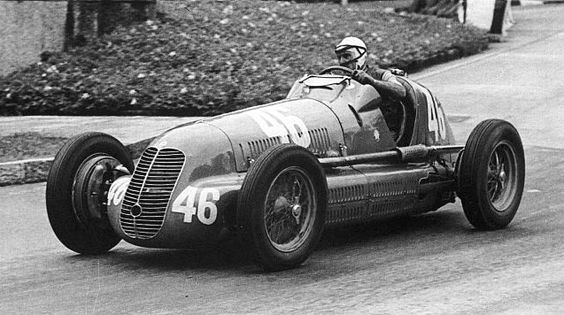
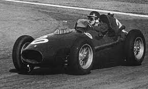
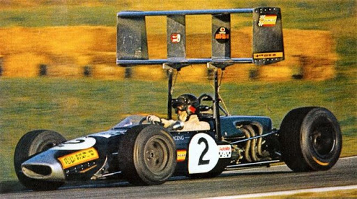
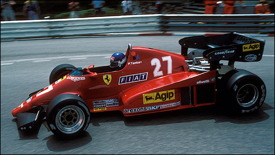
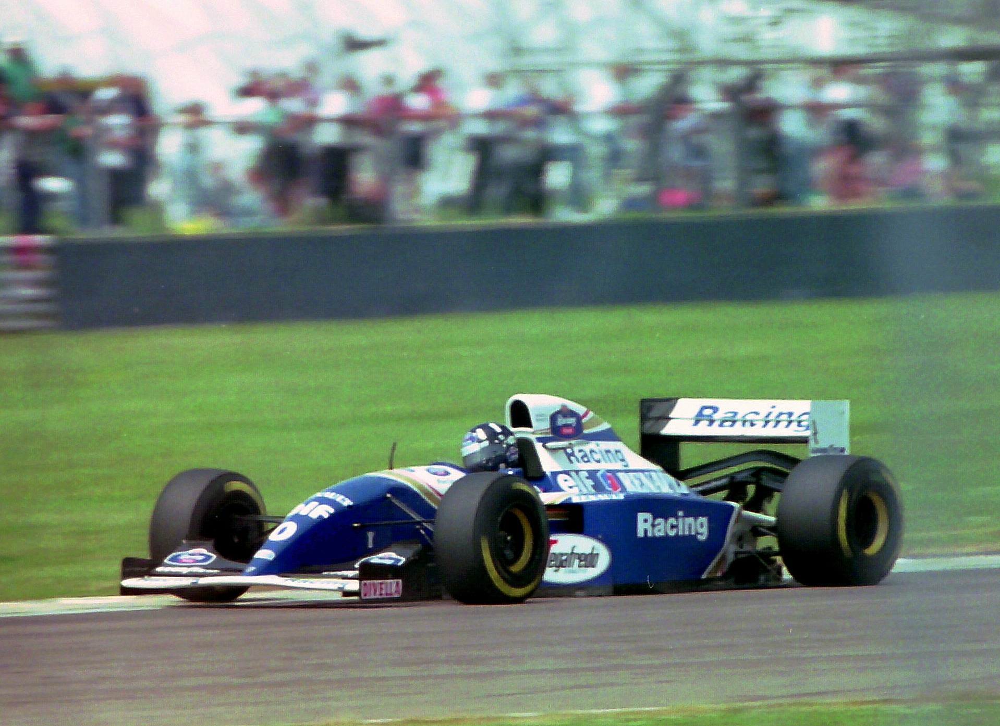
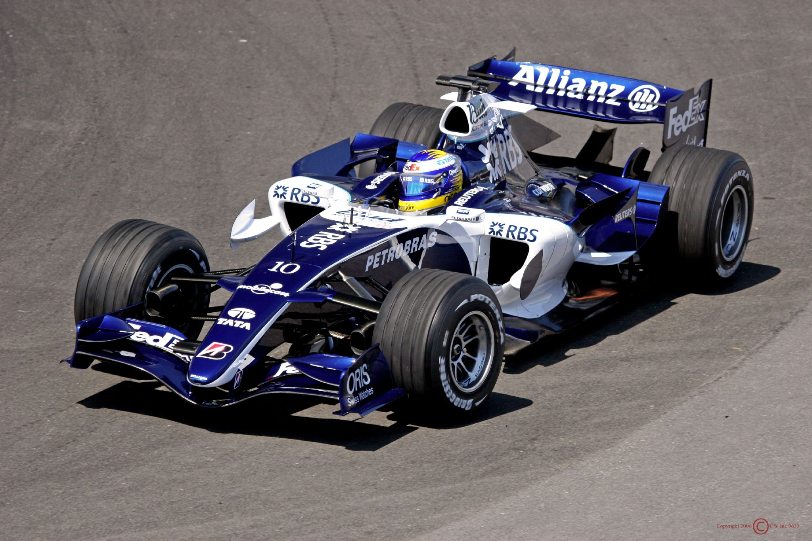

F1 Heritage
The history of the formula 1 is about the history of the upgrades on the cars and defining regulations for the basic rules from the start and continued growing through the history of formula 1 regarding the safety and the capacity of the engine and how it all came together. It all comes together to bring us with a racing competition spirit and passion that serves manufacturers but as well brings entertainment and keeps the drivers.

History
1946-1957
Formula 1 was created and defined around 1946 as we know it. The regulations were made around the engine capacities. The championships weren't introduced in the beginning but came later on. During the 1950s other manufacturs joined the formula 1, and this was the time where the teams were born. Around this decade also there were a lot of upgrades to the cars and regulation changes.
1958-1967
In 1962 they had the greatest breakthrough since the mind engine cars with an aluminum chassis instead of a traditional spaceframe design. In 1965 the racer that won this race also won the motorcycle race. He became the only racer who won both races.
FUN FACT: A private team entered and won the cup.
1968-1982
In these years they were mainly concentrating on the technical and the regulations of safety, after the number of death were very high.
1983-1993
Engines were the main concentration at this time, introducing the turbo charge, developing them more and more. Then they also finally introduced electronic aid: active suspensions, semi-automatic gearbox, and traction control.
FUN FACT: They had lightweight cameras on the cars.
1994-2005
After a lot of crashes, many were killed or placed in the hospital. So they inforced a lot more safety measurements. Because they couldn't change the cars, they require the cars had airboxes which reduced the power of the car. They banned a lot of gas that was toxic so only allowed some petrol. There were also rules about the size of the cockpit. And many other regulations such as reducing the aerodynamics and reduced cornering speed. (V10 engines become the most popular ones)
2006-present
In 2006 it was the last time there were two tyre manufacturers (Japanese manufacturer "Bridgestone" and French company "Michelin"), leaving Bridgestone as the sole supplier from 2007 and on. Later on in 2014 till now they are using hybrid engines.
FUN fact: Schumacher became a legend and everyone even people who dont watch know who Michael Schumacher is.